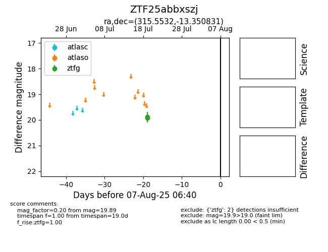

Target ZTF25abbxszj at 2025-08-07 07:30, see:
FINK: fink-portal.org/ZTF25abbxszj
Lasair: lasair-ztf.lsst.ac.uk/objects/ZTF25abbxszj
ALeRCE: alerce.online/object/ZTF25abbxszj
alt names
ZTF25abbxszj (ztf,fink)
coordinates:
equatorial (ra, dec) = (315.5532,-13.35083)
galactic (l, b) = (35.3189,-34.96156)
photometry
last ztfg=19.89
2 ztfg detections
